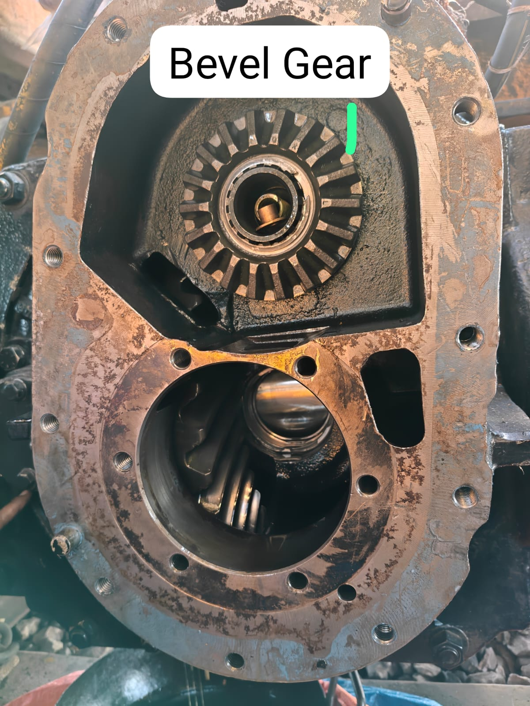
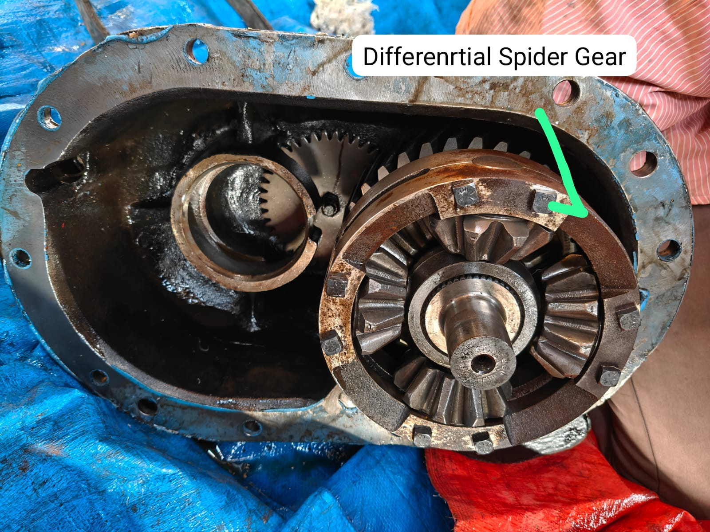

M/C ATRT-050 arrived BMY yard on 30.04.25 (Eng./Hrs. 1755/14165) & and found axles no. 5,6 and 9 not working. A joint report (dt. 02.05.25) on the condition of Axles of ATRT-050 Machine Enclosed with PDF
As per instructions SSE/TM/Line/R, Machine shifting program for replacement of Axles no. 5 & 6 at SD/R/SEC Rly.
➢ Dep. From BMY dt. On 16.10.25 and BMY Dep. 20:22 hrs.
➢ Date 17-10-25, 01:11hrs. arr. at SD/R
➢ Date 01-11-25 Final fitment of axle no. 5 & 6 with cardon shaft and other accessories.
And gear oil C-90 top up of axle no. 5 & 6. And get found axles no. 5 & 6 both are
skidding.
➢ Maintenance work completion report of ATRT-050.
➢ SE/HARSCO Sri Abhishek Raj visited SD/R date on 08-11-25 for working drive related
issue (Skidding/Slipping) after 4 days trying Axle no. 5 & 6 newly fitted kept under
observation.
To check the machine working performance need trial block in presence of
SE/HARSCO.
22.11.25 reported by site in-charge as found skidding/slipping in axles no. 5 & 6 since
from 21.11.25 during trial block as SE/Harsco Sri Mukesh Kumar was also present at
site & observed the same problem.
➢ Date 22.11.25 Due to problem not rectified by SE/Harsco Sri Mukesh Kumar finally as
per instruction of SSE/TM/SD/R by pass the axle no 5 & 6 (after dismantling of cardan
shaft)
➢ Reminder was given on 02.12.25 Regarding the slipping issue in ATRT-050 group
through Whatsapp.
➢ SE/HARSCO Sri Kaushal ji visited site date on 12-12-25 purpose the handling car
Axle-5 and axle-6 were kept in idle condition due to skidding.
➢ The handling car axle-5 and axle-6 engage and disengage mechanism was activated.
➢ Axle 5&6 were inspected and it was observed that the engage/disengage air
connection valve of axle-6 was damaged. However the air supply hose pipe was
connected as required. After this, fine adjustments were carried out through the
traction pump linkage assembly to synchronize forward and reverse movement.
➢ During the block on 17.12.25 a minor skidding was observed on Axle-1&2, Axle-5&6,
and Axle-10 and axle no-10 keep idle by SE/Harsco Sri Kaushal Ji due to required
traction pump synchronizer block etc.
➢ After the block synchronization of these axles was initiated and it was found that the
beam car traction pump was unable to maintain as the null disturb. Therefore, Axle-
10 has currently been kept in idle condition, as it was providing uneven flow during
traction synchronization. Click here & see report
➢ After that the remaining powered axles-1&2, Axle-3&4, and Axle-5&6- were set
through the pump linkage assembly. It was observed that Axle-6 had almost negligible
skidding, which is within the safe limit.
➢ Work block was attended and all axles were observed to be working properly except
Axle-9 (Non-functioning) and Axle-10, (dt. 17.12.25) which are currently in an idle
state.
➢ Several times reported by site In-charge Regarding slipping of axle no 5 & 6 through
whatsapp.
➢ Date 17/18.05.26 during shunting movement from line no. 3
A diesel loco arrived on Line No. 4 at 19:20 hrs on 17.05.26 for placement of empty
BRNs on Line No. 1. While pulling the formation from Line No. 3 to Line No. 4, skidding
and abnormal sound were observed from Axle No. 6 at 19:40 hrs.
➢ After permission from Your end (ADEN/TM/R) axles no. 6 isolation completed on
19.05.26
➢ Regarding axle no. 6 and found damaged Crown, gear, pinion gear & bearing gear (axle
part no. 0-2201030-0-15) etc.
the differential spider gear is installed between the two bevel gears-one on the input
yoke side and the other on the output yoke side. This connects axle no.6 to axle no. 5
An engage/disengage mechanism is already available to transmit power from axle no.
6 to axle no. 5

